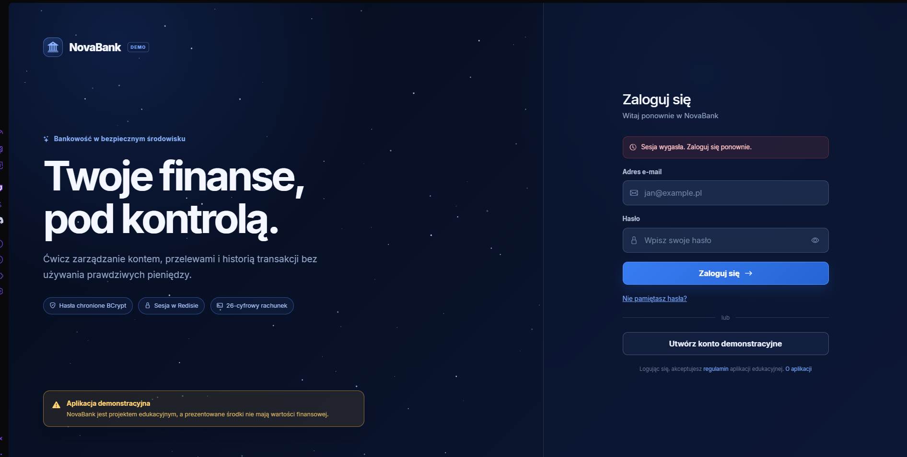
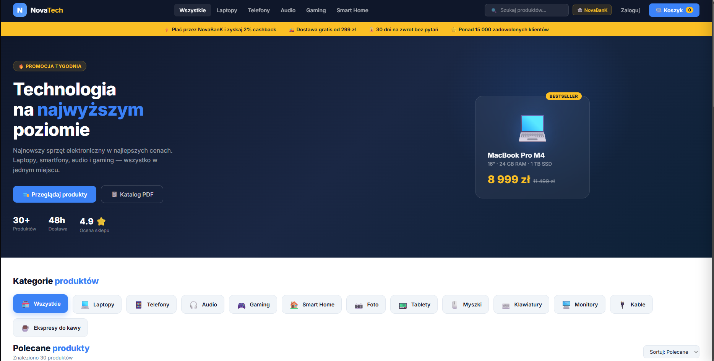
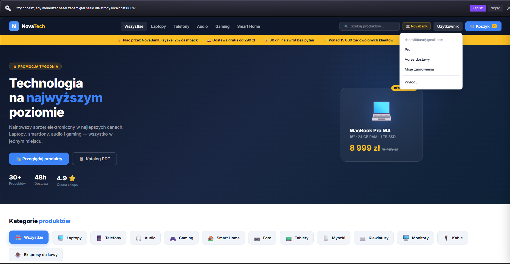
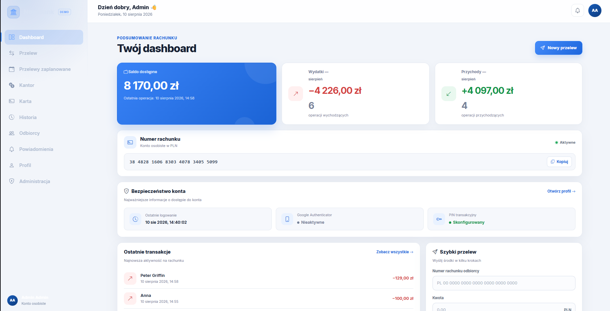
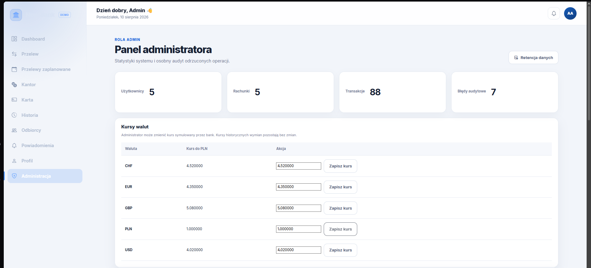
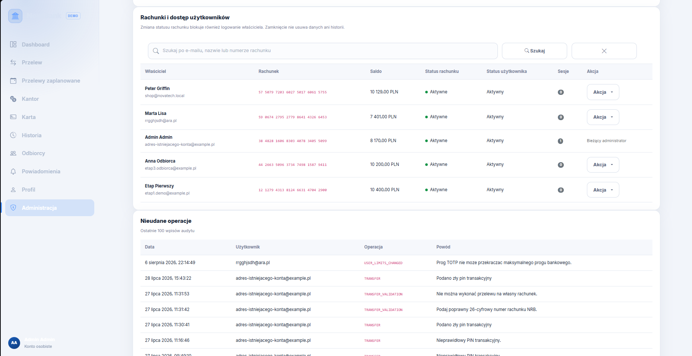
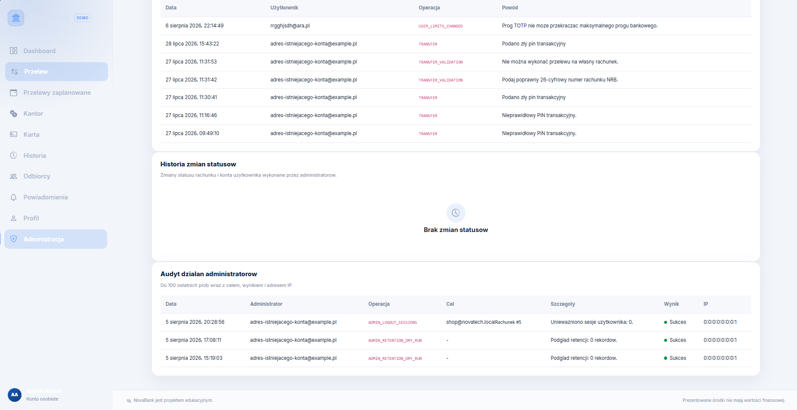
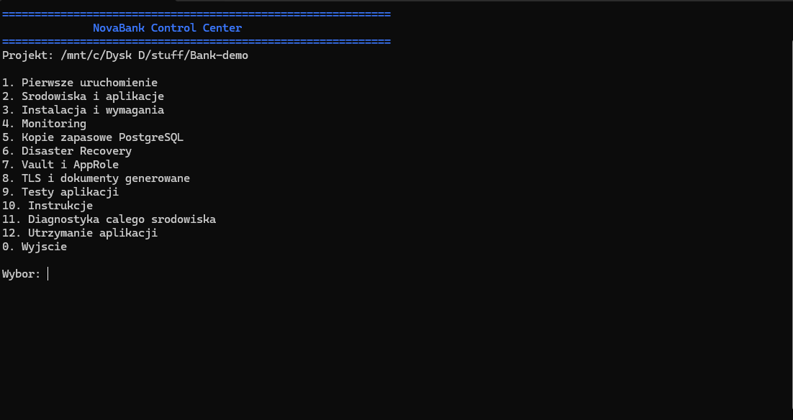
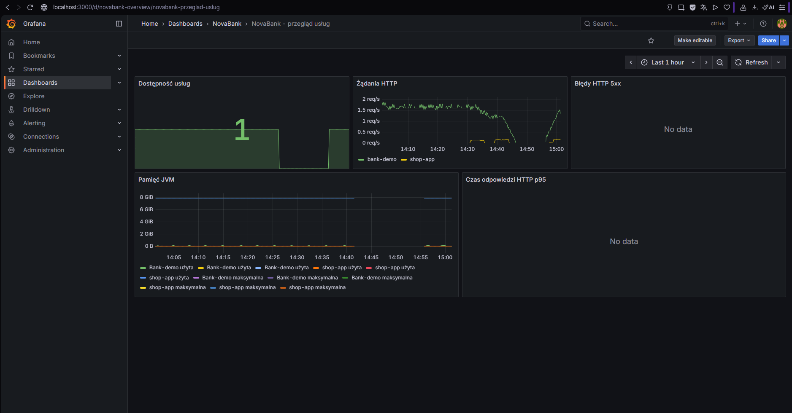

1. Co znajduje się w projekcie?
To edukacyjny system złożony z dwóch aplikacji Spring Boot: NovaBank oraz NovaTech Shop. Bank przechowuje wirtualne rachunki, operacje i autoryzacje płatności, a sklep katalog, koszyk, zamówienia i refundacje.
Bank
Port 8080, opcjonalnie TLS. Obsługuje logowanie, 2FA, PIN transakcyjny, przelewy, waluty, karty, historię i panel administratora.
Shop-app
Port 8081. Obsługuje produkty, koszyk, kasę, płatność bank-demo lub Stripe oraz zamówienia.
Infrastruktura
WSL 2, Docker Engine, PostgreSQL, Redis, Flyway, Vault PROD, Prometheus, Grafana i Alertmanager.
2. Pierwsze uruchomienie
- Uruchom WSL 2 i sprawdź wymagania w
NovaBank Control Center. - W centrali wybierz
Pierwsze uruchomienie. Utwórz pliki lokalne w.novabank/env/; nie dodawaj ich do Git. - Włącz PostgreSQL i Redis przez Docker Compose. Bank używa portów 5300 i 6379, sklep portu 5400.
- W IntelliJ wybierz wspólną konfigurację
NovaBank DEV. Uruchomi ona bank i sklep. - Otwórz linki z sekcji poniżej i wykonaj test logowania oraz testowy przelew.
bash scripts/control-center/control-center.sh docker compose up -d # następnie w IntelliJ: NovaBank DEV
3. Profile i sposób pracy
DEV
Codzienna praca. Używa .novabank/env/dev.env, lokalnych baz i zwykle HTTP. Monitoring może działać przez osobny Compose.
TEST
Testy jednostkowe i integracyjne. Testcontainers uruchamia izolowane PostgreSQL i Redis. Nie używa danych DEV.
PROD
Wymaga odpieczętowanego Vault, AppRole, TLS, truststore i keystore. Sekrety wpisuje się do plików lokalnych lub pobiera z Vault, nigdy do repozytorium.
Zmiana profilu odbywa się w konfiguracji IntelliJ. Dla DEV wybierz Bank DEV/Shop DEV, a dla PROD odpowiednie konfiguracje PROD. Po zmianie zatrzymaj i uruchom oba procesy ponownie.
4. Co można przetestować?
Bankowość
Załóż użytkownika, zaloguj się, skonfiguruj PIN i Google Authenticator, wykonaj przelew, zmień kurs waluty, sprawdź historię i wygeneruj PDF/CSV.
Sklep
Przeglądaj katalog, otwórz szczegóły produktu, dodaj towary do koszyka, wybierz bank lub kartę, sprawdź zamówienia i wykonaj refundację.
Administrator
Wyszukuj rachunki, blokuj lub zamykaj konto bez usuwania danych, przeglądaj audyt, retencję, kursy oraz unieważniaj sesje.
SHOP_PAYMENT_PROVIDER=stripe. Przekazuje webhooki do shop-app i testuje API operatora. Nie pobiera środków z rachunków NovaBank. Dla bank-demo płatność kartą jest symulowana przez wewnętrzny formularz i może zmienić saldo rachunków demonstracyjnych.5. Monitoring
Prometheus zbiera metryki, Grafana je wizualizuje, a Alertmanager obsługuje alerty. Aplikacje wystawiają metryki na osobnych portach administracyjnych.
docker compose --env-file infra/monitoring/.env.monitoring \ -f docker-compose.monitoring.yaml up -d
6. Bezpieczeństwo i sekrety
Redis przechowuje sesje i krótkotrwałe wyzwania. CSRF chroni formularze, BCrypt chroni hasła, a idempotencja chroni płatności i refundacje przed podwójnym wykonaniem.
W DEV sekrety są lokalne. W PROD Vault przechowuje sekrety banku i sklepu, a aplikacje korzystają z AppRole. Do uruchomienia Vault potrzebne są trzy z pięciu kluczy unseal, ale nie root token. Klucze, token, Role ID, Secret ID, hasła GPG i truststore zapisz poza repozytorium.
.env.7. Utrzymanie
- Backup PostgreSQL: wybierz w centrali
Kopie zapasowe PostgreSQL; skrypt tworzy katalog z datą, sumy SHA-256 i test odtworzenia. - Disaster Recovery: odtwórz najnowszą kopię w izolowanym środowisku i zachowaj raport.
- Flyway: migracje są wersjonowane w
db/migration; nie edytuj zastosowanej migracji, dodaj nową. - Control Center: używaj menu do monitoringu, Vault, testów, TLS, czyszczenia artefaktów i diagnostyki.
Pełne procedury znajdują się w General_Instruction.md (EN) / General_Instruction.pl.md (PL). Ten przewodnik jest krótką mapą projektu, a główna instrukcja zawiera kompletne procedury operacyjne.
8. Jak wygląda aplikacja?
Obrazy pokazują bezpieczne widoki demonstracyjne. Dane widoczne na screenach są przykładowe.









9. Najważniejsze adresy
Instrukcje w centrali. To jest główny podręcznik projektu.